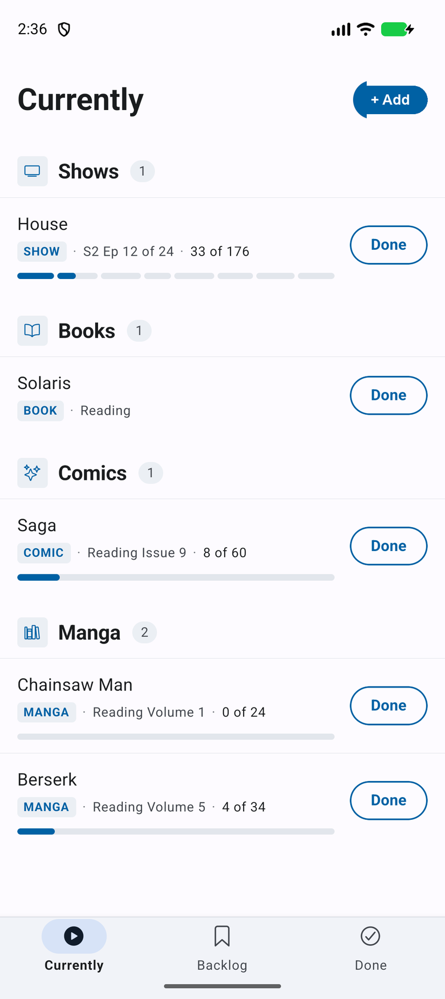
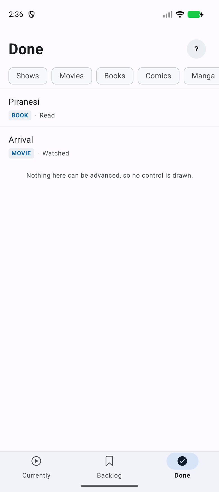
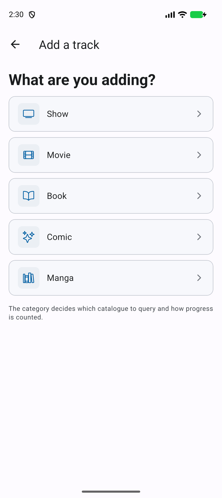

Keep track of what you are part-way through
Shows, movies, books, comics and manga in one place, stored entirely on your phone. No account, no server, no cover art. Search finds and confirms the real thing — or type a title by hand — then one tap moves it along.
- Local only — on-device SQLite
- No accounts — nothing to sign in to
- Three tabs — Currently, Backlog, Done
- Real matches — Google Books, AniList, Metron, TMDB + barcode scan
The app
Every screen below is a real screenshot, taken from the current build running on an emulator — not a mock-up standing in for something that does not exist yet.






- Category groups lead Currently Shows, Movies, Books, Comics, Manga — the same order as picking a category to add one.
- A real match is confirmed, not assumed Search hits a real catalogue per category, shows what it found, and waits for you to confirm before it saves anything.
- Comic asks one more question A single issue is matched by barcode down to the printing; a collection tracks as one item, the same as a book.
- Standalone books have no bar Nothing to be part-way through numerically, so no progress is drawn — absence is the signal.
- One control, one word "Done" finishes an episode, an issue or a volume alike, wherever you are in the app.
Try it
Built from the app's own pieces, not redrawn from memory: the exact Ionicons font the app
ships, the same Material 3 color tokens, and the same swipe thresholds as
SwipeableTrackRow.tsx. Swipe a row right to pause, past the line to delete, or
left to jump to any episode or volume — or just tap Done.
Currently
- Real icons The category, tab and swipe-action icons are the app's actual Ionicons font, subset to just these glyphs and embedded — not redrawn.
- Real gesture thresholds Swipe distances and the pause/delete crossover point match
SwipeableTrackRow.tsx'sLATCHandDELETE_THRESHOLDconstants, scaled to this frame. - Books have no tracker Dune Messiah shows only Reading/Done — no unit count, no progress bar — matching the "standalone books have no bar" rule above.
- What's not real No React, no SQLite, no persistence — state resets on reload. Sample data only.
Why it is built this way
-
Text is the artwork
No covers, no thumbnails, no placeholder tiles. A title set well identifies a book faster than a small cover, and never shows a grey box where the artwork is missing.
-
Your library stays on your phone
Everything lives in an on-device SQLite database. There is no account, no backend and no network call required to use the app — catalogue search is a convenience, not a dependency.
-
Three tabs, and that is all
Currently, Backlog and Done. There is no settings screen, no onboarding and nothing to configure — the app has one job and no preferences to hold an opinion about.
-
One tap moves things along
The app opens to Currently, grouped by category and ordered by what you advanced most recently. Marking the next episode, issue or volume finished is a single tap.
How it works
Pick a category
Show, movie, book, comic or manga. A comic asks one more question first — single issue or collection — since they are matched by completely different catalogues.
Match it, or type it
Type a title and the right catalogue answers — Google Books, AniList, Metron or TMDB, per category — plus barcode scanning for books, manga and single-issue comics. No match, no problem: type a title and a count by hand instead.
Tap Done as you go
Each tap finishes the next entry and advances the row. Once something has its first entry finished it moves to Currently by itself, and drops to Done once every entry is finished.
There are no shelves in the database. Currently, Backlog and Done are queries over the same tables — a track is in Currently if any part of it is started but not all of it is finished. Nothing has to be moved between lists, and nothing can appear in two of them at once.
| Media | Container | What you tick off | States |
|---|---|---|---|
| Show | the show | episode | unwatched → watched |
| Comic, single issue | the series | issue | not started → reading → read |
| Manga | the series | volume | not started → reading → read |
| Book, or a comic collection | — | the book | not started → reading → read |
| Movie | — | the movie | unwatched → watched |
You can sit half-way inside a book in a way worth recording; you cannot really do that with an episode. So watched things are binary and read things have a middle state.
Built with
| Piece | Why |
|---|---|
| Expo / React Native | One TypeScript codebase for iOS and Android, and the fastest path to a build on a real phone. |
| TypeScript | Strict mode throughout. The rules live in types before they live in tests. |
| expo-sqlite | The on-device database. Satisfies local-only storage directly, with plain migrations. |
| expo-router | File-based routing for the three tabs and the add flow. |
| Google Books · AniList · Metron · TMDB | Real catalogue lookups behind one MetadataProvider interface, one provider per category. Manual entry is still the fallback when a match fails or none exists. |
| expo-camera | Barcode scanning — ISBN for books and manga, UPC-A plus a 5-digit supplemental code for single-issue comics. |
| Jest | Unit and repository tests — 342 passing across 29 suites as of this build. |
The layering is deliberate: src/domain/ is pure TypeScript with no I/O — status
transitions, shelf classification, progress arithmetic — and imports nothing from the database
or the UI. If a rule needs a query to decide something, it is in the wrong module.
Run it
Track It is not published to any app store. It runs from source with Expo — clone it, install, and open it on your phone with Expo Go or a development build.
Not here yet
-
Next
Export and import. The JSON backup format is written and tested — validated payloads, all-or-nothing restore — but it is not surfaced yet and there is no settings screen to reach it from. Until it lands, the app has no backup path at all: the library lives in one place, on one phone, and a lost or wiped device loses it.
-
Next
Cover art, on a details screen. Reversed from earlier — v1 discarded artwork on purpose, but a details screen with real cover art and one-tap actions (start, backlog, search again) is planned for v2. The rest of the app — the row-based lists — stays text-only.
-
Next
Stats. What you've finished, how fast you start things, and how often you follow through. Every figure would come from columns that already exist —
created_at,started_at,finished_at— so no schema change is anticipated once this gets built. -
Next
A native iOS build. Today the app only runs from source via Expo Go or a dev build — a real installable build isn't set up yet.
-
No
Accounts or sync. The data is small, single-user and of no value to anyone else, and conflict resolution is the expensive half of sync. Export is the intended answer to losing a device — see above for where that stands.
House
Track It's design has gone through two full passes — an e-ink brutalist read, then this Material 3 rebuild.